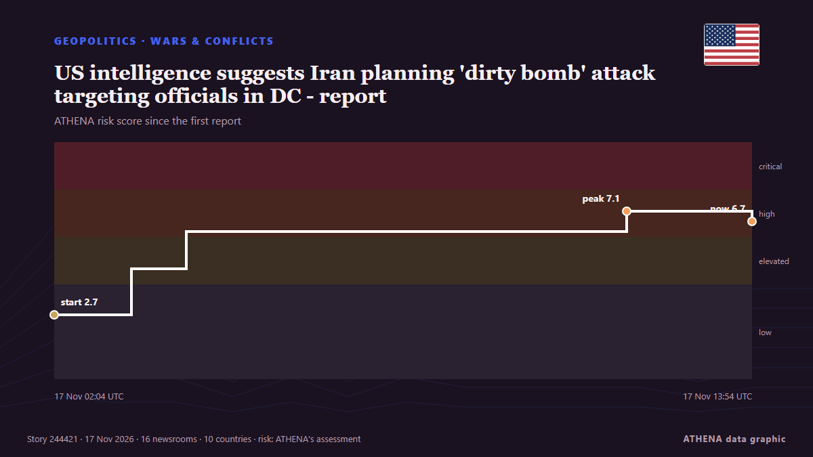

Γεωπολιτική, Πολιτική & Ασφάλεια
ΧορηγούμενοΠαρουσιάζεται από  Cybernetics and Artificial Intelligence Lab Welcome to the Cybernetics and Artificial Intelligence Laboratory, established at the Department of Business Administration of the National and Kapodistrian University of Athens. The lab is headed by Professor Dimitrios Thomakos. The lab aims to do research that can be published in top venues. Our research uses tools and methods of Artificial Intelligence, and lies in the following areas: - Forecasting - Decision making - Cyber security - Finance We are always looking forward to collaborating with exceptional students!
Cybernetics and Artificial Intelligence Lab Welcome to the Cybernetics and Artificial Intelligence Laboratory, established at the Department of Business Administration of the National and Kapodistrian University of Athens. The lab is headed by Professor Dimitrios Thomakos. The lab aims to do research that can be published in top venues. Our research uses tools and methods of Artificial Intelligence, and lies in the following areas: - Forecasting - Decision making - Cyber security - Finance We are always looking forward to collaborating with exceptional students!
Οι τίτλοι των ειδήσεων παρουσιάζονται στα αγγλικά, όπως δημοσιεύτηκαν.

Διπλωματία & σύνοδοιUS intelligence suggests Iran planning 'dirty bomb' attack targeting officials in DC - report
Sources familiar with the intelligence described to CNN the planning as an effort to give Iran additional options rather than evidence of an imminent attack. από The Jerusalem Post
| 4 Νοε | 397 |
|---|---|
| 5 Νοε | 327 |
| 6 Νοε | 227 |
| 7 Νοε | 211 |
| 8 Νοε | 200 |
| 9 Νοε | 315 |
| 10 Νοε | 287 |
| 11 Νοε | 261 |
| 12 Νοε | 264 |
| 13 Νοε | 224 |
| 14 Νοε | 176 |
| 15 Νοε | 195 |
| 16 Νοε | 211 |
| 17 Νοε | 48 |
Oman, Iran Discuss Safeguarding Maritime Corridors
Muscat: Sayyid Badr bin Hamad al Busaidi, Foreign Minister, met Dr Abbas Araghchi, Foreign Minister of the Islamic Republic of Iran, at the Foreign Ministry's headquarters on Tuesd... από Oman Observer
Iranian drones hit US radar system in Bahrain — IRGC
The attack was launched in response to repeated violations of the airspace of the Islamic Republic by US Army drones. από TASS (English)
Spy Scandal and Midterm Defeat Heat Up Trump’s Asia Visit
With the political constraints imposed by the US midterm elections lifted, Donald Trump may become more erratic and unpredictable. από The Scotsman
After Yemen setback, Saudi Arabia replaces military commander
Riyadh’s Yemeni allies were forced to withdraw from swathes of territory in a major setback for their campaign against the group. από The Straits Times
BAHRAIN ISSUES ALERT, URGES PUBLIC TO REMAIN CALM
MANAMA, Nov 17: The Bahrain Ministry of Interior calls on citizens and residents to remain calm, head to the nearest safe location, and follow the news through official channels t... από Arab Times
With US midterms underway, courts rebuff Trump's pressure on state election officials
Nov 3 - In the hours before polls opened for the US midterm elections on Tuesday, federal judges issued a series of rulings restricting the Trump administration's unprecedented efforts to pressure… από The Straits Times
Iran's IRGC strikes radar at US military base in Bahrain
Manama - Blasts and sirens rang out over Bahrain and authorities urged residents to seek shelter on Sunday as Iran's Guards said they had attacked a US military base in the Gulf... από Oman Observer
17 killed in two mass shootings in South Africa
Roughly 60 people are killed in South Africa on average a day, according to police statistics. από The Straits Times
‘Orange Order could grow in a united Ireland’: Varadkar
Opposition parties had piled on pressure for the Government to make preparations for a debate on a united Ireland. από The Irish News (Belfast)
‘Emperor’s New Clothes’: Burnham breaks 10-year taboo on Brexit
Boris Johnson's 'oven ready' Brexit deal never tasted very good. από EUobserver
Le Pen says France will keep giving Ukraine aid if she is elected
PARIS, Nov 16 - French far-right leader Marine Le Pen said on Monday that France would continue to give Ukraine material and humanitarian assistance if she is elected president next spring. από The Straits Times
Israel: Party chiefs say Netanyahu's election fraud claims a coup attempt
Netanyahu subsequently accused Arab parties of electoral fraud after they gained a record number of seats. από Africanews (English)
Two major Kyiv bridges hit in Russian attack, mayor says
The Porsche Zahid dealership in Kyiv region was damaged in a Russian attack and has temporarily suspended operations. από Ukrinform (English)
Production suspended at Iraq's Khor Mor gas field after drone attack
Production was halted on Sunday at Iraq's Khor Mor gas field, one of the largest in the northern Kurdistan region, after a drone attack hit the field. από The New Arab
Russia Says Its Defenses Intercepted over 1,300 Ukrainian Drones in a Major Attack
Russia’s Defense Ministry said Monday it downed 1,336 Ukrainian drones in what would be the highest number of interceptions during an aerial attack since Moscow’s all-out invasion of its neighbor… από The National Herald
[Register now] How Scott Colom won a Senate race: A post-election Q&A with Mississippi Today’s politics team
Mississippi Today's politics team is having an online Q&A session about Scott Colom's victory in the U.S. από Mississippi Today
Senior Hamas commander who helped oversee Oct. 7 attack killed in Israeli strike in Gaza
Hamas said on Sunday that a senior commander who helped plan and oversee the Oct. από CBC News
Bukele says Salvadoran troops destroyed gang HQ in Haiti
Santo Domingo.- President Luis Abinader expressed support for Salvadoran President Nayib Bukele regarding the security situation in Haiti, while highlighting the Dominican Republic’s cooperation with… από Dominican Today
Xi, Trump and Putin to hold first trilateral summit in China
Leaders expected to discuss nuclear disarmament, while Ukraine may remain off the agenda. από News of Bahrain
Spanish PM seeks election boost as Brazil's Lula visits
Brazilian President Luiz Inácio Lula da Silva met leftist ally Pedro Sánchez in Madrid on Monday, with his recent election comeback offering encouragement to the Spanish leader ahead of a snap vote… από The Local Spain
Estonia to close border with Russia after arson attack on local drone maker
Estonia plans to close its road border crossings with Russia in response to an attempted arson attack against Estonian defense company Threod Systems. από Defense News
EU forces board suspected Russian shadow fleet tanker in Mediterranean
EU foreign policy chief Kaja Kallas says vessel was sailing under false flag as EU prepares fresh Russia sanctions. από Anadolu Agency (English)
US and Russia to oppose talks on limiting autonomous weapons
Major military nations argue that existing humanitarian law is enough to govern warfare. από The Straits Times
Türkiye enacts law approving Mecca defense pact
A law approving Türkiye’s ratification of a joint defense pact with Saudi Arabia and Pakistan took effect on Nov. από Hürriyet Daily News
Three Commercial Ships Hit by Drones in Black Sea Near Romania
Drones have struck three commercial ships in the Black Sea near Romania's Sulina canal, Prime Minister Luca Niculescu said on Sunday, adding that his armed forces had scrambled fighter jets… από MarineLink
Ukraine Facility: EU approves largest-ever payment of EUR 8B to Kyiv
The Council of the European Union on Monday approved a decision that will allow Kyiv to receive just under EUR 8 billion under the Ukraine Facility program in the near future. από Ukrinform (English)
Cape Verde: Neves Wins Second Term As Cape Verde's President
[RFI] José Maria Neves has won a second five-year term as Cape Verde's president, according to provisional results from Sunday's election. από AllAfrica
Finland reports strike on Russian warship in Baltic Sea
The Finnish military said on Thursday that their forces had detected a “strike” on a Russian warship in the Baltic Sea the previous day, but the security situation in the area remained stable. από Ukrinform (English)
3 men sentenced to death over Jordan church attack
The gunmen killed nine people and wounded 25 others when they stormed a funeral at a Greek Orthodox church in southern Hammoud village, Karak governorate, on Oct 23. από Free Malaysia Today
Twelve APEC leaders to attend CEO Summit in Shenzhen
Twelve leaders from Asia-Pacific Economic Cooperation (APEC) member economies will attend the 2026 APEC CEO Summit in Shenzhen, a Chinese trade official said on Sunday. από CGTN (China)
US floated idea swapping Ukrainian territory for NATO membership: Zelensky
Ukrainian President Volodymyr Zelensky said U.S. negotiators floated the possibility of Ukraine surrendering in the eastern Donbas region and conceding it to Russia in exchange for NATO membership. από The Hill
Trump admin warns air travellers of another messy day
Trump admin warns air travelers of another messy day. από Gulf News
Zelenskyy warns Starshield restrictions threaten Ukraine’s energy defenses
Restrictions on the system hamper Kyiv’s ability to shoot down Russian drones. από ABC News (International)
Yemen government forces withdraw from area near Bab el-Mandeb Strait, Houthis in control
Yemeni forces fighting for the internationally recognised Saudi-backed government said on Sunday that they were withdrawing from an area overlooking the strategic Bab el-Mandeb Strait, leaving the… από Business Recorder